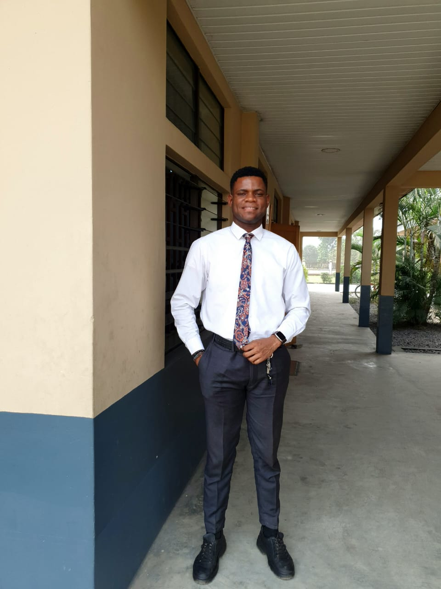

Home
Rafting Website
Rafting site plan
linkedin
Facebook
kalu chinedu | WDD 130

Hello! my name is kalu chinedu and i am from Nigeria, Abia stete. I enjoy playing soccer
Aba Nigeria Temple
Accra Ghana Temple
Saltlake City Temple